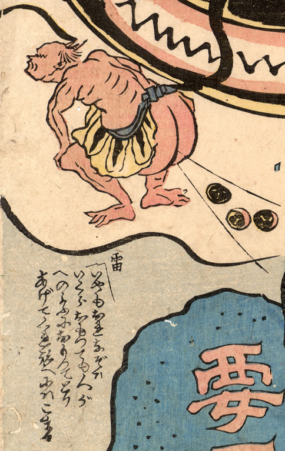

雷がしゃがみこんで、屁をしており、尻の中から小太鼓が出てきている。雷は赤い肌で頭に2本角を生やし、虎皮のような腰巻きをつけている。
出典：親書誌：U426_nichibunken_0174：（鯰と要石；ナマズトカナメイシ）／日付：2010／資源識別子：U426_nichibunken_0174_0002_0000
Copyright (c)2010- International Research Center for Japanese Studies, Kyoto, Japan. All rights reserved.